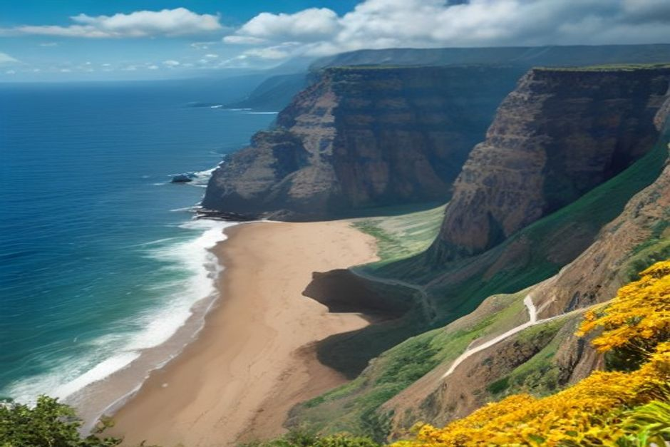
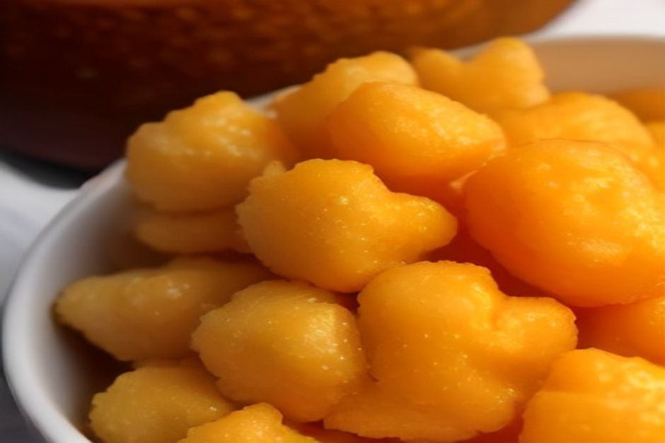

Se já pediu espetada na Madeira, já conhece o milho frito: os cubos dourados que chegam ao lado da carne sem ninguém os ter pedido. Se ainda não foi, fica a saber o que é, de que é feito, porque não é polenta e onde vale a pena comê-lo.
Milho frito: o que é, afinal?
É o acompanhamento da espetada madeirense. Uma massa de milho cozinhada com alho e couve, deixada a arrefecer até ficar firme, cortada em cubos pequenos e frita. Por fora fica crocante e dourado, por dentro continua macio e denso.
Quem vem do continente costuma procurar uma comparação e fica entre a broa e a polenta. Nenhuma serve bem. O melhor é pensar num pequeno bolinho de milho salgado, que só faz sentido ao lado de carne grelhada. Raramente o vai encontrar sozinho num prato.

Como se faz o milho frito da Madeira
A base é farinha de milho branco, cozinhada devagar em água com banha ou manteiga, alho esmagado e couve picada, a couve portuguesa de folha solta. Mexe-se até a mistura engrossar e ficar parecida com uma polenta muito firme.
Nesta fase ainda não está frito: chama-se milho cozido. Deixa-se arrefecer e assentar durante cerca de duas horas, corta-se em cubos e vai a fritar em óleo bem quente. A crosta só fica como deve ser se a massa estiver bem fria e firme, e é por isso que ninguém tem pressa nesta parte.
A couve e o alho são o que o distingue. Dão-lhe um travo salgado e ligeiramente amargo que uma massa de milho simples não tem.
Milho frito ou polenta?
A pergunta aparece muito, e a resposta é: parecidos, mas não iguais. Ambos partem de milho cozido deixado a solidificar. A polenta italiana costuma ir à grelha ou à frigideira em fatias grossas. O milho frito é mais denso, leva alho e couve misturados antes de assentar e é sempre cortado em cubos pequenos.
Os cubos pequenos têm uma consequência prática: muito mais superfície crocante em cada garfada.
Porque vem sempre com a espetada?
A espetada madeirense é carne de vaca em cubos, temperada com alho e louro, espetada e grelhada sobre brasas, tradicionalmente com lenha de loureiro. É o prato mais associado à ilha e o milho frito acompanha-a em quase todo o lado.
Funciona porque os cubos absorvem à mesa os sucos de alho e vinho da carne. Fazem o papel que o pão ou a batata fazem noutras mesas, mas com crocante. Por isso, na maioria dos restaurantes, os dois são tratados como um conjunto e o milho frito chega sem ser pedido.
A espetada leva as atenções. O milho frito é a razão pela qual o prato nunca parece completo sem ele.
De onde vem o milho madeirense
O milho chegou à Madeira com os colonos portugueses no século XV e adaptou-se bem aos socalcos íngremes da ilha. Tornou-se rapidamente um alimento básico nas casas rurais, ao lado da batata e do pão.
O milho frito nasceu de um hábito prático e não de um livro de receitas. As sobras das papas de milho, depois de arrefecerem e endurecerem de um dia para o outro, eram cortadas e fritas em vez de reaquecidas moles. O resultado estaladiço acabou por ser um prato por direito próprio.

Onde comer milho frito na Madeira
Em praticamente qualquer restaurante que sirva espetada. Não precisa de o procurar na ementa: vem com ela.
O prato está especialmente ligado a Câmara de Lobos e ao Estreito de Câmara de Lobos, as vilas piscatórias e vinícolas a oeste do Funchal. É lá que as churrascarias ao ar livre grelham a espetada em espetos de madeira, pendurados sobre a mesa. Se quer comê-lo no sítio onde o prato é mais da casa, comece por aí.
Um passeio de barco e depois almoço em Câmara de Lobos
Câmara de Lobos é a primeira paragem do passeio de dia da Chifbay, a partir do Funchal. Isso dá um plano simples: manhã no mar e almoço tardio na vila, com espetada e milho frito, logo a seguir.
O passeio sai da Marina do Funchal, cais C, às 10:00 ou às 14:00. São 2 h 30 até à Ribeira Brava, por 500 EUR, ou 3 h até à Ponta do Sol, por 600 EUR, com Câmara de Lobos, Cabo Girão e banho e pranchas de paddle na Fajã dos Padres. O preço é para o barco inteiro, até 5 pessoas, nunca por pessoa, e a bordo há comida e bebidas incluídas. Quem preferir o fim do dia tem o pôr do sol privado, com saída 1 h 15 antes do pôr do sol, durante todo o ano: 2 h até ao Cabo Girão por 400 EUR, ou 2 h 30 até à Ribeira Brava por 500 EUR, sem paragem para banho.
Em qualquer dos casos o barco é só do seu grupo, com dois skippers madeirenses licenciados. O cancelamento é gratuito até 24 horas antes da partida. Para comparar tudo, veja os melhores passeios de barco na Madeira, as experiências e a página de informações práticas.
Conselhos para a mesa
- Coma o milho frito enquanto está quente: é quando a crosta ainda estala.
- Passe os cubos pelos sucos que ficam no prato da espetada, é para isso que servem.
- Se a dose lhe parecer curta, peça mais: é um acompanhamento barato de repetir e quase ninguém se queixa.
Se quiser ler mais sobre a ilha, o nosso diário tem outros guias, e as avaliações de quem já navegou connosco estão à distância de um clique.